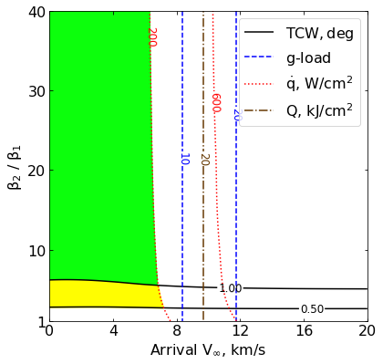
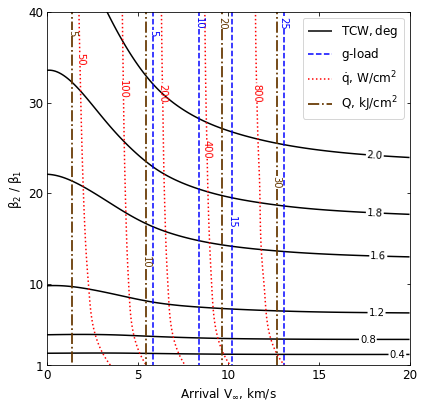

05 - a - Mars - Feasibility Charts - Drag¶
[2]:
from AMAT.planet import Planet
from AMAT.vehicle import Vehicle
import numpy as np
from scipy import interpolate
import matplotlib.pyplot as plt
from matplotlib import rcParams
from matplotlib.patches import Polygon
import os
[2]:
# Create a planet object
planet=Planet("MARS")
planet.h_skip = 120000.0
# Load an nominal atmospheric profile with height, temp, pressure, density data
planet.loadAtmosphereModel('../atmdata/Mars/mars-gram-avg.dat', 0 , 1 ,2, 3)
vinf_kms_array = np.linspace( 0.0, 20.0, 11)
betaRatio_array = np.linspace( 1.0, 41.0 , 11)
[4]:
beta1 = 20.0
runID = 'mars-drag-'
[4]:
v0_kms_array = np.zeros(len(vinf_kms_array))
v0_kms_array[:] = np.sqrt(1.0*(vinf_kms_array[:]*1E3)**2.0 + 2*np.ones(len(vinf_kms_array))*planet.GM/(planet.RP+120.0*1.0E3))/1.0E3
overShootLimit_array = np.zeros((len(v0_kms_array),len(betaRatio_array)))
underShootLimit_array = np.zeros((len(v0_kms_array),len(betaRatio_array)))
exitflag_os_array = np.zeros((len(v0_kms_array),len(betaRatio_array)))
exitflag_us_array = np.zeros((len(v0_kms_array),len(betaRatio_array)))
TCW_array = np.zeros((len(v0_kms_array),len(betaRatio_array)))
[5]:
for i in range(0,len(v0_kms_array)):
for j in range(0,len(betaRatio_array)):
vehicle=Vehicle('DMVehicle', 150.0, beta1, 0.0, 3.1416, 0.0, 0.10, planet)
vehicle.setInitialState(120.0,0.0,0.0,v0_kms_array[i],0.0,-4.5,0.0,0.0)
vehicle.setSolverParams(1E-6)
vehicle.setDragModulationVehicleParams(beta1,betaRatio_array[j])
underShootLimit_array[i,j], exitflag_us_array[i,j] = vehicle.findUnderShootLimitD(2400.0, 2.0, -80.0,-4.0,1E-10,400.0)
overShootLimit_array[i,j] , exitflag_os_array[i,j] = vehicle.findOverShootLimitD (2400.0, 2.0, -80.0,-4.0,1E-10,400.0)
TCW_array[i,j] = overShootLimit_array[i,j] - underShootLimit_array[i,j]
print('VINF: '+str(vinf_kms_array[i])+' km/s, BETA RATIO: '+str(betaRatio_array[j])+' TCW: '+str(TCW_array[i,j])+' deg.')
np.savetxt('../data/jsr-paper/mars/'+runID+'vinf_kms_array.txt',vinf_kms_array)
np.savetxt('../data/jsr-paper/mars/'+runID+'v0_kms_array.txt',v0_kms_array)
np.savetxt('../data/jsr-paper/mars/'+runID+'betaRatio_array.txt',betaRatio_array)
np.savetxt('../data/jsr-paper/mars/'+runID+'overShootLimit_array.txt',overShootLimit_array)
np.savetxt('../data/jsr-paper/mars/'+runID+'exitflag_os_array.txt',exitflag_os_array)
np.savetxt('../data/jsr-paper/mars/'+runID+'underShootLimit_array.txt',underShootLimit_array)
np.savetxt('../data/jsr-paper/mars/'+runID+'exitflag_us_array.txt',exitflag_us_array)
np.savetxt('../data/jsr-paper/mars/'+runID+'TCW_array.txt',TCW_array)
VINF: 0.0 km/s, BETA RATIO: 1.0 TCW: 0.0 deg.
VINF: 0.0 km/s, BETA RATIO: 5.0 TCW: 0.882454714319465 deg.
VINF: 0.0 km/s, BETA RATIO: 9.0 TCW: 1.1635984738932166 deg.
VINF: 0.0 km/s, BETA RATIO: 13.0 TCW: 1.340319584349345 deg.
VINF: 0.0 km/s, BETA RATIO: 17.0 TCW: 1.471829855319811 deg.
VINF: 0.0 km/s, BETA RATIO: 21.0 TCW: 1.5752168146937038 deg.
VINF: 0.0 km/s, BETA RATIO: 25.0 TCW: 1.6594261595528224 deg.
VINF: 0.0 km/s, BETA RATIO: 29.0 TCW: 1.730460369733919 deg.
VINF: 0.0 km/s, BETA RATIO: 33.0 TCW: 1.791919550181774 deg.
VINF: 0.0 km/s, BETA RATIO: 37.0 TCW: 1.845917571848986 deg.
VINF: 0.0 km/s, BETA RATIO: 41.0 TCW: 1.89534849194024 deg.
VINF: 2.0 km/s, BETA RATIO: 1.0 TCW: 0.0 deg.
VINF: 2.0 km/s, BETA RATIO: 5.0 TCW: 0.8782551585427427 deg.
VINF: 2.0 km/s, BETA RATIO: 9.0 TCW: 1.1736965495874756 deg.
VINF: 2.0 km/s, BETA RATIO: 13.0 TCW: 1.3621433544321917 deg.
VINF: 2.0 km/s, BETA RATIO: 17.0 TCW: 1.4998228874974302 deg.
VINF: 2.0 km/s, BETA RATIO: 21.0 TCW: 1.606484231979266 deg.
VINF: 2.0 km/s, BETA RATIO: 25.0 TCW: 1.6935772852266382 deg.
VINF: 2.0 km/s, BETA RATIO: 29.0 TCW: 1.7670679606453632 deg.
VINF: 2.0 km/s, BETA RATIO: 33.0 TCW: 1.832578547859157 deg.
VINF: 2.0 km/s, BETA RATIO: 37.0 TCW: 1.8916595642913308 deg.
VINF: 2.0 km/s, BETA RATIO: 41.0 TCW: 1.945003867138439 deg.
VINF: 4.0 km/s, BETA RATIO: 1.0 TCW: 0.0 deg.
VINF: 4.0 km/s, BETA RATIO: 5.0 TCW: 0.8918627480015857 deg.
VINF: 4.0 km/s, BETA RATIO: 9.0 TCW: 1.2148278364766156 deg.
VINF: 4.0 km/s, BETA RATIO: 13.0 TCW: 1.4169221074444067 deg.
VINF: 4.0 km/s, BETA RATIO: 17.0 TCW: 1.5614509170081874 deg.
VINF: 4.0 km/s, BETA RATIO: 21.0 TCW: 1.6755128271033755 deg.
VINF: 4.0 km/s, BETA RATIO: 25.0 TCW: 1.7727232120778353 deg.
VINF: 4.0 km/s, BETA RATIO: 29.0 TCW: 1.85603133987388 deg.
VINF: 4.0 km/s, BETA RATIO: 33.0 TCW: 1.9286842231012997 deg.
VINF: 4.0 km/s, BETA RATIO: 37.0 TCW: 1.9934097167060827 deg.
VINF: 4.0 km/s, BETA RATIO: 41.0 TCW: 2.051774145460513 deg.
VINF: 6.0 km/s, BETA RATIO: 1.0 TCW: 0.0 deg.
VINF: 6.0 km/s, BETA RATIO: 5.0 TCW: 0.9233586405753158 deg.
VINF: 6.0 km/s, BETA RATIO: 9.0 TCW: 1.2646332009790058 deg.
VINF: 6.0 km/s, BETA RATIO: 13.0 TCW: 1.472626685983414 deg.
VINF: 6.0 km/s, BETA RATIO: 17.0 TCW: 1.6285877118680219 deg.
VINF: 6.0 km/s, BETA RATIO: 21.0 TCW: 1.753502510891849 deg.
VINF: 6.0 km/s, BETA RATIO: 25.0 TCW: 1.857130681968556 deg.
VINF: 6.0 km/s, BETA RATIO: 29.0 TCW: 1.9459386958915275 deg.
VINF: 6.0 km/s, BETA RATIO: 33.0 TCW: 2.023458634143026 deg.
VINF: 6.0 km/s, BETA RATIO: 37.0 TCW: 2.091992447956727 deg.
VINF: 6.0 km/s, BETA RATIO: 41.0 TCW: 2.1535377741674893 deg.
VINF: 8.0 km/s, BETA RATIO: 1.0 TCW: 0.0 deg.
VINF: 8.0 km/s, BETA RATIO: 5.0 TCW: 0.949735077087098 deg.
VINF: 8.0 km/s, BETA RATIO: 9.0 TCW: 1.296785191676463 deg.
VINF: 8.0 km/s, BETA RATIO: 13.0 TCW: 1.5147500627172121 deg.
VINF: 8.0 km/s, BETA RATIO: 17.0 TCW: 1.6782344256462238 deg.
VINF: 8.0 km/s, BETA RATIO: 21.0 TCW: 1.8080999319645343 deg.
VINF: 8.0 km/s, BETA RATIO: 25.0 TCW: 1.9158909074867552 deg.
VINF: 8.0 km/s, BETA RATIO: 29.0 TCW: 2.007521911727963 deg.
VINF: 8.0 km/s, BETA RATIO: 33.0 TCW: 2.0876208164518175 deg.
VINF: 8.0 km/s, BETA RATIO: 37.0 TCW: 2.1593845472380053 deg.
VINF: 8.0 km/s, BETA RATIO: 41.0 TCW: 2.2239236066925514 deg.
VINF: 10.0 km/s, BETA RATIO: 1.0 TCW: 0.0 deg.
VINF: 10.0 km/s, BETA RATIO: 5.0 TCW: 0.9667894195590634 deg.
VINF: 10.0 km/s, BETA RATIO: 9.0 TCW: 1.3166931813466363 deg.
VINF: 10.0 km/s, BETA RATIO: 13.0 TCW: 1.5437213414807047 deg.
VINF: 10.0 km/s, BETA RATIO: 17.0 TCW: 1.7110876046972407 deg.
VINF: 10.0 km/s, BETA RATIO: 21.0 TCW: 1.8440058390588092 deg.
VINF: 10.0 km/s, BETA RATIO: 25.0 TCW: 1.953481780630682 deg.
VINF: 10.0 km/s, BETA RATIO: 29.0 TCW: 2.0477460082038306 deg.
VINF: 10.0 km/s, BETA RATIO: 33.0 TCW: 2.1303460477902263 deg.
VINF: 10.0 km/s, BETA RATIO: 37.0 TCW: 2.203646352238138 deg.
VINF: 10.0 km/s, BETA RATIO: 41.0 TCW: 2.269327391652041 deg.
VINF: 12.0 km/s, BETA RATIO: 1.0 TCW: 0.0 deg.
VINF: 12.0 km/s, BETA RATIO: 5.0 TCW: 0.9774223067470302 deg.
VINF: 12.0 km/s, BETA RATIO: 9.0 TCW: 1.3328515178327507 deg.
VINF: 12.0 km/s, BETA RATIO: 13.0 TCW: 1.563499450287054 deg.
VINF: 12.0 km/s, BETA RATIO: 17.0 TCW: 1.7336686571070459 deg.
VINF: 12.0 km/s, BETA RATIO: 21.0 TCW: 1.867882706450473 deg.
VINF: 12.0 km/s, BETA RATIO: 25.0 TCW: 1.9795681334289839 deg.
VINF: 12.0 km/s, BETA RATIO: 29.0 TCW: 2.075488290589419 deg.
VINF: 12.0 km/s, BETA RATIO: 33.0 TCW: 2.1591556766434223 deg.
VINF: 12.0 km/s, BETA RATIO: 37.0 TCW: 2.2332187068132043 deg.
VINF: 12.0 km/s, BETA RATIO: 41.0 TCW: 2.3005774645316706 deg.
VINF: 14.0 km/s, BETA RATIO: 1.0 TCW: 0.0 deg.
VINF: 14.0 km/s, BETA RATIO: 5.0 TCW: 0.9846942119074811 deg.
VINF: 14.0 km/s, BETA RATIO: 9.0 TCW: 1.3452062762662536 deg.
VINF: 14.0 km/s, BETA RATIO: 13.0 TCW: 1.5782401727628894 deg.
VINF: 14.0 km/s, BETA RATIO: 17.0 TCW: 1.749930027697701 deg.
VINF: 14.0 km/s, BETA RATIO: 21.0 TCW: 1.8852915834104351 deg.
VINF: 14.0 km/s, BETA RATIO: 25.0 TCW: 1.9986041700467467 deg.
VINF: 14.0 km/s, BETA RATIO: 29.0 TCW: 2.0954120229107502 deg.
VINF: 14.0 km/s, BETA RATIO: 33.0 TCW: 2.179554698675929 deg.
VINF: 14.0 km/s, BETA RATIO: 37.0 TCW: 2.255197461203352 deg.
VINF: 14.0 km/s, BETA RATIO: 41.0 TCW: 2.3234536612544616 deg.
VINF: 16.0 km/s, BETA RATIO: 1.0 TCW: 0.0 deg.
VINF: 16.0 km/s, BETA RATIO: 5.0 TCW: 0.9891010514656955 deg.
VINF: 16.0 km/s, BETA RATIO: 9.0 TCW: 1.3537450307958352 deg.
VINF: 16.0 km/s, BETA RATIO: 13.0 TCW: 1.588552060220536 deg.
VINF: 16.0 km/s, BETA RATIO: 17.0 TCW: 1.7608844822425453 deg.
VINF: 16.0 km/s, BETA RATIO: 21.0 TCW: 1.8979285065033764 deg.
VINF: 16.0 km/s, BETA RATIO: 25.0 TCW: 2.0120143547901534 deg.
VINF: 16.0 km/s, BETA RATIO: 29.0 TCW: 2.109049541675631 deg.
VINF: 16.0 km/s, BETA RATIO: 33.0 TCW: 2.194532966506813 deg.
VINF: 16.0 km/s, BETA RATIO: 37.0 TCW: 2.2709211684123147 deg.
VINF: 16.0 km/s, BETA RATIO: 41.0 TCW: 2.339602104642836 deg.
VINF: 18.0 km/s, BETA RATIO: 1.0 TCW: 0.0 deg.
VINF: 18.0 km/s, BETA RATIO: 5.0 TCW: 0.9912710469434387 deg.
VINF: 18.0 km/s, BETA RATIO: 9.0 TCW: 1.3595479120667733 deg.
VINF: 18.0 km/s, BETA RATIO: 13.0 TCW: 1.595786612277152 deg.
VINF: 18.0 km/s, BETA RATIO: 17.0 TCW: 1.76867715401022 deg.
VINF: 18.0 km/s, BETA RATIO: 21.0 TCW: 1.906875535420113 deg.
VINF: 18.0 km/s, BETA RATIO: 25.0 TCW: 2.021415647734102 deg.
VINF: 18.0 km/s, BETA RATIO: 29.0 TCW: 2.119098133771331 deg.
VINF: 18.0 km/s, BETA RATIO: 33.0 TCW: 2.205485085156397 deg.
VINF: 18.0 km/s, BETA RATIO: 37.0 TCW: 2.2822194797481643 deg.
VINF: 18.0 km/s, BETA RATIO: 41.0 TCW: 2.3512368811134365 deg.
VINF: 20.0 km/s, BETA RATIO: 1.0 TCW: 0.0 deg.
VINF: 20.0 km/s, BETA RATIO: 5.0 TCW: 0.9924433124615462 deg.
VINF: 20.0 km/s, BETA RATIO: 9.0 TCW: 1.3639687009163026 deg.
VINF: 20.0 km/s, BETA RATIO: 13.0 TCW: 1.6011606473985012 deg.
VINF: 20.0 km/s, BETA RATIO: 17.0 TCW: 1.774852570346411 deg.
VINF: 20.0 km/s, BETA RATIO: 21.0 TCW: 1.9136563684733119 deg.
VINF: 20.0 km/s, BETA RATIO: 25.0 TCW: 2.028332237539871 deg.
VINF: 20.0 km/s, BETA RATIO: 29.0 TCW: 2.1270575631897373 deg.
VINF: 20.0 km/s, BETA RATIO: 33.0 TCW: 2.2138109439911204 deg.
VINF: 20.0 km/s, BETA RATIO: 37.0 TCW: 2.2908371192315826 deg.
VINF: 20.0 km/s, BETA RATIO: 41.0 TCW: 2.3598452530495706 deg.
[6]:
acc_net_g_max_array = np.zeros((len(v0_kms_array),len(betaRatio_array)))
stag_pres_atm_max_array = np.zeros((len(v0_kms_array),len(betaRatio_array)))
q_stag_total_max_array = np.zeros((len(v0_kms_array),len(betaRatio_array)))
heatload_max_array = np.zeros((len(v0_kms_array),len(betaRatio_array)))
for i in range(0,len(v0_kms_array)):
for j in range(0,len(betaRatio_array)):
vehicle=Vehicle('DMVehicle', 150.0, beta1, 0.0, 3.1416, 0.0, 0.10, planet)
vehicle.setInitialState(120.0,0.0,0.0,v0_kms_array[i],0.0,overShootLimit_array[i,j],0.0,0.0)
vehicle.setSolverParams(1E-6)
vehicle.propogateEntry (2400.0, 2.0, 0.0)
# Extract and save variables to plot
t_min_os = vehicle.t_minc
h_km_os = vehicle.h_kmc
acc_net_g_os = vehicle.acc_net_g
q_stag_con_os = vehicle.q_stag_con
q_stag_rad_os = vehicle.q_stag_rad
rc_os = vehicle.rc
vc_os = vehicle.vc
stag_pres_atm_os = vehicle.computeStagPres(rc_os,vc_os)/(1.01325E5)
heatload_os = vehicle.heatload
vehicle=Vehicle('DMVehicle', 150.0, beta1, 0.0, 3.1416, 0.0, 0.10, planet)
vehicle.setInitialState(120.0,0.0,0.0,v0_kms_array[i],0.0,underShootLimit_array[i,j],0.0,0.0)
vehicle.setSolverParams( 1E-6)
vehicle.propogateEntry (2400.0, 2.0, 0.0)
# Extract and save variable to plot
t_min_us = vehicle.t_minc
h_km_us = vehicle.h_kmc
acc_net_g_us = vehicle.acc_net_g
q_stag_con_us = vehicle.q_stag_con
q_stag_rad_us = vehicle.q_stag_rad
rc_us = vehicle.rc
vc_us = vehicle.vc
stag_pres_atm_us = vehicle.computeStagPres(rc_us,vc_us)/(1.01325E5)
heatload_us = vehicle.heatload
q_stag_total_os = q_stag_con_os + q_stag_rad_os
q_stag_total_us = q_stag_con_us + q_stag_rad_us
acc_net_g_max_array[i,j] = max(max(acc_net_g_os),max(acc_net_g_os))
stag_pres_atm_max_array[i,j] = max(max(stag_pres_atm_os),max(stag_pres_atm_os))
q_stag_total_max_array[i,j] = max(max(q_stag_total_os),max(q_stag_total_us))
heatload_max_array[i,j] = max(max(heatload_os),max(heatload_os))
print("V_infty: "+str(vinf_kms_array[i])+" km/s"+", BR: "+str(betaRatio_array[j])+" G_MAX: "+str(acc_net_g_max_array[i,j])+" QDOT_MAX: "+str(q_stag_total_max_array[i,j])+" J_MAX: "+str(heatload_max_array[i,j])+" STAG. PRES: "+str(stag_pres_atm_max_array[i,j]))
np.savetxt('../data/jsr-paper/mars/'+runID+'acc_net_g_max_array.txt',acc_net_g_max_array)
np.savetxt('../data/jsr-paper/mars/'+runID+'stag_pres_atm_max_array.txt',stag_pres_atm_max_array)
np.savetxt('../data/jsr-paper/mars/'+runID+'q_stag_total_max_array.txt',q_stag_total_max_array)
np.savetxt('../data/jsr-paper/mars/'+runID+'heatload_max_array.txt',heatload_max_array)
V_infty: 0.0 km/s, BR: 1.0 G_MAX: 0.8802169883242571 QDOT_MAX: 23.010132507255943 J_MAX: 4588.414832443239 STAG. PRES: 0.0017087535593077485
V_infty: 0.0 km/s, BR: 5.0 G_MAX: 0.8802169883242571 QDOT_MAX: 32.28708458343495 J_MAX: 4588.414832443239 STAG. PRES: 0.0017087535593077485
V_infty: 0.0 km/s, BR: 9.0 G_MAX: 0.8802169883242571 QDOT_MAX: 34.989850900860404 J_MAX: 4588.414832443239 STAG. PRES: 0.0017087535593077485
V_infty: 0.0 km/s, BR: 13.0 G_MAX: 0.8802169883242571 QDOT_MAX: 36.52275945791371 J_MAX: 4588.414832443239 STAG. PRES: 0.0017087535593077485
V_infty: 0.0 km/s, BR: 17.0 G_MAX: 0.8802169883242571 QDOT_MAX: 37.55989597765508 J_MAX: 4588.414832443239 STAG. PRES: 0.0017087535593077485
V_infty: 0.0 km/s, BR: 21.0 G_MAX: 0.8802169883242571 QDOT_MAX: 38.3380786142878 J_MAX: 4588.414832443239 STAG. PRES: 0.0017087535593077485
V_infty: 0.0 km/s, BR: 25.0 G_MAX: 0.8802169883242571 QDOT_MAX: 38.934910917159684 J_MAX: 4588.414832443239 STAG. PRES: 0.0017087535593077485
V_infty: 0.0 km/s, BR: 29.0 G_MAX: 0.8802169883242571 QDOT_MAX: 39.41189455692323 J_MAX: 4588.414832443239 STAG. PRES: 0.0017087535593077485
V_infty: 0.0 km/s, BR: 33.0 G_MAX: 0.8802169883242571 QDOT_MAX: 39.84754118467324 J_MAX: 4588.414832443239 STAG. PRES: 0.0017087535593077485
V_infty: 0.0 km/s, BR: 37.0 G_MAX: 0.8802169883242571 QDOT_MAX: 40.18641781057541 J_MAX: 4588.414832443239 STAG. PRES: 0.0017087535593077485
V_infty: 0.0 km/s, BR: 41.0 G_MAX: 0.8802169883242571 QDOT_MAX: 40.53137053268188 J_MAX: 4588.414832443239 STAG. PRES: 0.0017087535593077485
V_infty: 2.0 km/s, BR: 1.0 G_MAX: 1.2922586475989402 QDOT_MAX: 30.780991513427722 J_MAX: 5426.4217636394405 STAG. PRES: 0.0025077505408398247
V_infty: 2.0 km/s, BR: 5.0 G_MAX: 1.2922586475989402 QDOT_MAX: 42.58534881807495 J_MAX: 5426.4217636394405 STAG. PRES: 0.0025077505408398247
V_infty: 2.0 km/s, BR: 9.0 G_MAX: 1.2922586475989402 QDOT_MAX: 45.90511285179835 J_MAX: 5426.4217636394405 STAG. PRES: 0.0025077505408398247
V_infty: 2.0 km/s, BR: 13.0 G_MAX: 1.2922586475989402 QDOT_MAX: 47.77616535543122 J_MAX: 5426.4217636394405 STAG. PRES: 0.0025077505408398247
V_infty: 2.0 km/s, BR: 17.0 G_MAX: 1.2922586475989402 QDOT_MAX: 49.0630598246032 J_MAX: 5426.4217636394405 STAG. PRES: 0.0025077505408398247
V_infty: 2.0 km/s, BR: 21.0 G_MAX: 1.2922586475989402 QDOT_MAX: 49.98017597665684 J_MAX: 5426.4217636394405 STAG. PRES: 0.0025077505408398247
V_infty: 2.0 km/s, BR: 25.0 G_MAX: 1.2922586475989402 QDOT_MAX: 50.71077560278259 J_MAX: 5426.4217636394405 STAG. PRES: 0.0025077505408398247
V_infty: 2.0 km/s, BR: 29.0 G_MAX: 1.2922586475989402 QDOT_MAX: 51.335131270568695 J_MAX: 5426.4217636394405 STAG. PRES: 0.0025077505408398247
V_infty: 2.0 km/s, BR: 33.0 G_MAX: 1.2922586475989402 QDOT_MAX: 51.846801553295165 J_MAX: 5426.4217636394405 STAG. PRES: 0.0025077505408398247
V_infty: 2.0 km/s, BR: 37.0 G_MAX: 1.2922586475989402 QDOT_MAX: 52.335512745788805 J_MAX: 5426.4217636394405 STAG. PRES: 0.0025077505408398247
V_infty: 2.0 km/s, BR: 41.0 G_MAX: 1.2922586475989402 QDOT_MAX: 52.756821194936826 J_MAX: 5426.4217636394405 STAG. PRES: 0.0025077505408398247
V_infty: 4.0 km/s, BR: 1.0 G_MAX: 2.6556218073586857 QDOT_MAX: 59.35647933469471 J_MAX: 7664.301898881714 STAG. PRES: 0.0051501345539506915
V_infty: 4.0 km/s, BR: 5.0 G_MAX: 2.6556218073586857 QDOT_MAX: 78.37809273807032 J_MAX: 7664.301898881714 STAG. PRES: 0.0051501345539506915
V_infty: 4.0 km/s, BR: 9.0 G_MAX: 2.6556218073586857 QDOT_MAX: 83.62977095017672 J_MAX: 7664.301898881714 STAG. PRES: 0.0051501345539506915
V_infty: 4.0 km/s, BR: 13.0 G_MAX: 2.6556218073586857 QDOT_MAX: 86.62811635572457 J_MAX: 7664.301898881714 STAG. PRES: 0.0051501345539506915
V_infty: 4.0 km/s, BR: 17.0 G_MAX: 2.6556218073586857 QDOT_MAX: 88.60005071383527 J_MAX: 7664.301898881714 STAG. PRES: 0.0051501345539506915
V_infty: 4.0 km/s, BR: 21.0 G_MAX: 2.6556218073586857 QDOT_MAX: 90.16363849616087 J_MAX: 7664.301898881714 STAG. PRES: 0.0051501345539506915
V_infty: 4.0 km/s, BR: 25.0 G_MAX: 2.6556218073586857 QDOT_MAX: 91.44279186919564 J_MAX: 7664.301898881714 STAG. PRES: 0.0051501345539506915
V_infty: 4.0 km/s, BR: 29.0 G_MAX: 2.6556218073586857 QDOT_MAX: 92.51144072637459 J_MAX: 7664.301898881714 STAG. PRES: 0.0051501345539506915
V_infty: 4.0 km/s, BR: 33.0 G_MAX: 2.6556218073586857 QDOT_MAX: 93.33812320622258 J_MAX: 7664.301898881714 STAG. PRES: 0.0051501345539506915
V_infty: 4.0 km/s, BR: 37.0 G_MAX: 2.6556218073586857 QDOT_MAX: 94.23627916189568 J_MAX: 7664.301898881714 STAG. PRES: 0.0051501345539506915
V_infty: 4.0 km/s, BR: 41.0 G_MAX: 2.6556218073586857 QDOT_MAX: 94.92419865279852 J_MAX: 7664.301898881714 STAG. PRES: 0.0051501345539506915
V_infty: 6.0 km/s, BR: 1.0 G_MAX: 5.227929047435482 QDOT_MAX: 118.73798111103807 J_MAX: 11027.478268924884 STAG. PRES: 0.010132860210917341
V_infty: 6.0 km/s, BR: 5.0 G_MAX: 5.227929047435482 QDOT_MAX: 151.725650601039 J_MAX: 11027.478268924884 STAG. PRES: 0.010132860210917341
V_infty: 6.0 km/s, BR: 9.0 G_MAX: 5.227929047435482 QDOT_MAX: 160.88964013106397 J_MAX: 11027.478268924884 STAG. PRES: 0.010132860210917341
V_infty: 6.0 km/s, BR: 13.0 G_MAX: 5.227929047435482 QDOT_MAX: 165.9515661775459 J_MAX: 11027.478268924884 STAG. PRES: 0.010132860210917341
V_infty: 6.0 km/s, BR: 17.0 G_MAX: 5.227929047435482 QDOT_MAX: 169.6333526303966 J_MAX: 11027.478268924884 STAG. PRES: 0.010132860210917341
V_infty: 6.0 km/s, BR: 21.0 G_MAX: 5.227929047435482 QDOT_MAX: 172.54061321429495 J_MAX: 11027.478268924884 STAG. PRES: 0.010132860210917341
V_infty: 6.0 km/s, BR: 25.0 G_MAX: 5.227929047435482 QDOT_MAX: 174.8507079691975 J_MAX: 11027.478268924884 STAG. PRES: 0.010132860210917341
V_infty: 6.0 km/s, BR: 29.0 G_MAX: 5.227929047435482 QDOT_MAX: 176.34899592064525 J_MAX: 11027.478268924884 STAG. PRES: 0.010132860210917341
V_infty: 6.0 km/s, BR: 33.0 G_MAX: 5.227929047435482 QDOT_MAX: 178.33867312114853 J_MAX: 11027.478268924884 STAG. PRES: 0.010132860210917341
V_infty: 6.0 km/s, BR: 37.0 G_MAX: 5.227929047435482 QDOT_MAX: 179.8741342449452 J_MAX: 11027.478268924884 STAG. PRES: 0.010132860210917341
V_infty: 6.0 km/s, BR: 41.0 G_MAX: 5.227929047435482 QDOT_MAX: 181.0662533266709 J_MAX: 11027.478268924884 STAG. PRES: 0.010132860210917341
V_infty: 8.0 km/s, BR: 1.0 G_MAX: 9.104871040859468 QDOT_MAX: 223.52470297611444 J_MAX: 15471.775196159788 STAG. PRES: 0.017640083281891306
V_infty: 8.0 km/s, BR: 5.0 G_MAX: 9.104871040859468 QDOT_MAX: 278.3250974393591 J_MAX: 15471.775196159788 STAG. PRES: 0.017640083281891306
V_infty: 8.0 km/s, BR: 9.0 G_MAX: 9.104871040859468 QDOT_MAX: 293.77146179051095 J_MAX: 15471.775196159788 STAG. PRES: 0.017640083281891306
V_infty: 8.0 km/s, BR: 13.0 G_MAX: 9.104871040859468 QDOT_MAX: 303.07626937119113 J_MAX: 15471.775196159788 STAG. PRES: 0.017640083281891306
V_infty: 8.0 km/s, BR: 17.0 G_MAX: 9.104871040859468 QDOT_MAX: 309.655184580125 J_MAX: 15471.775196159788 STAG. PRES: 0.017640083281891306
V_infty: 8.0 km/s, BR: 21.0 G_MAX: 9.104871040859468 QDOT_MAX: 314.6957528686912 J_MAX: 15471.775196159788 STAG. PRES: 0.017640083281891306
V_infty: 8.0 km/s, BR: 25.0 G_MAX: 9.104871040859468 QDOT_MAX: 317.8980887035052 J_MAX: 15471.775196159788 STAG. PRES: 0.017640083281891306
V_infty: 8.0 km/s, BR: 29.0 G_MAX: 9.104871040859468 QDOT_MAX: 321.5415330271017 J_MAX: 15471.775196159788 STAG. PRES: 0.017640083281891306
V_infty: 8.0 km/s, BR: 33.0 G_MAX: 9.104871040859468 QDOT_MAX: 324.8850688212515 J_MAX: 15471.775196159788 STAG. PRES: 0.017640083281891306
V_infty: 8.0 km/s, BR: 37.0 G_MAX: 9.104871040859468 QDOT_MAX: 327.5400137030362 J_MAX: 15471.775196159788 STAG. PRES: 0.017640083281891306
V_infty: 8.0 km/s, BR: 41.0 G_MAX: 9.104871040859468 QDOT_MAX: 329.62026103621764 J_MAX: 15471.775196159788 STAG. PRES: 0.017640083281891306
V_infty: 10.0 km/s, BR: 1.0 G_MAX: 14.304598311624453 QDOT_MAX: 388.6262749395543 J_MAX: 20984.95787944843 STAG. PRES: 0.027708308813992465
V_infty: 10.0 km/s, BR: 5.0 G_MAX: 14.304598311624453 QDOT_MAX: 476.4742673502999 J_MAX: 20984.95787944843 STAG. PRES: 0.027708308813992465
V_infty: 10.0 km/s, BR: 9.0 G_MAX: 14.304598311624453 QDOT_MAX: 501.7534025759173 J_MAX: 20984.95787944843 STAG. PRES: 0.027708308813992465
V_infty: 10.0 km/s, BR: 13.0 G_MAX: 14.304598311624453 QDOT_MAX: 516.6983260123902 J_MAX: 20984.95787944843 STAG. PRES: 0.027708308813992465
V_infty: 10.0 km/s, BR: 17.0 G_MAX: 14.304598311624453 QDOT_MAX: 527.4827313314122 J_MAX: 20984.95787944843 STAG. PRES: 0.027708308813992465
V_infty: 10.0 km/s, BR: 21.0 G_MAX: 14.304598311624453 QDOT_MAX: 533.4324216219031 J_MAX: 20984.95787944843 STAG. PRES: 0.027708308813992465
V_infty: 10.0 km/s, BR: 25.0 G_MAX: 14.304598311624453 QDOT_MAX: 541.2271415414065 J_MAX: 20984.95787944843 STAG. PRES: 0.027708308813992465
V_infty: 10.0 km/s, BR: 29.0 G_MAX: 14.304598311624453 QDOT_MAX: 547.8216296278498 J_MAX: 20984.95787944843 STAG. PRES: 0.027708308813992465
V_infty: 10.0 km/s, BR: 33.0 G_MAX: 14.304598311624453 QDOT_MAX: 552.9552638664154 J_MAX: 20984.95787944843 STAG. PRES: 0.027708308813992465
V_infty: 10.0 km/s, BR: 37.0 G_MAX: 14.304598311624453 QDOT_MAX: 556.582314249187 J_MAX: 20984.95787944843 STAG. PRES: 0.027708308813992465
V_infty: 10.0 km/s, BR: 41.0 G_MAX: 14.304598311624453 QDOT_MAX: 558.4628397750381 J_MAX: 20984.95787944843 STAG. PRES: 0.027708308813992465
V_infty: 12.0 km/s, BR: 1.0 G_MAX: 20.946618740536405 QDOT_MAX: 629.303319092016 J_MAX: 27569.851474373587 STAG. PRES: 0.040566845549945406
V_infty: 12.0 km/s, BR: 5.0 G_MAX: 20.946618740536405 QDOT_MAX: 762.6656281622896 J_MAX: 27569.851474373587 STAG. PRES: 0.040566845549945406
V_infty: 12.0 km/s, BR: 9.0 G_MAX: 20.946618740536405 QDOT_MAX: 797.5643025221304 J_MAX: 27569.851474373587 STAG. PRES: 0.040566845549945406
V_infty: 12.0 km/s, BR: 13.0 G_MAX: 20.946618740536405 QDOT_MAX: 826.6937299071749 J_MAX: 27569.851474373587 STAG. PRES: 0.040566845549945406
V_infty: 12.0 km/s, BR: 17.0 G_MAX: 20.946618740536405 QDOT_MAX: 841.1980519163874 J_MAX: 27569.851474373587 STAG. PRES: 0.040566845549945406
V_infty: 12.0 km/s, BR: 21.0 G_MAX: 20.946618740536405 QDOT_MAX: 849.0471402572424 J_MAX: 27569.851474373587 STAG. PRES: 0.040566845549945406
V_infty: 12.0 km/s, BR: 25.0 G_MAX: 20.946618740536405 QDOT_MAX: 863.5684144354888 J_MAX: 27569.851474373587 STAG. PRES: 0.040566845549945406
V_infty: 12.0 km/s, BR: 29.0 G_MAX: 20.946618740536405 QDOT_MAX: 874.2982984138607 J_MAX: 27569.851474373587 STAG. PRES: 0.040566845549945406
V_infty: 12.0 km/s, BR: 33.0 G_MAX: 20.946618740536405 QDOT_MAX: 882.5680790079577 J_MAX: 27569.851474373587 STAG. PRES: 0.040566845549945406
V_infty: 12.0 km/s, BR: 37.0 G_MAX: 20.946618740536405 QDOT_MAX: 888.0086139355695 J_MAX: 27569.851474373587 STAG. PRES: 0.040566845549945406
V_infty: 12.0 km/s, BR: 41.0 G_MAX: 20.946618740536405 QDOT_MAX: 890.6421797348206 J_MAX: 27569.851474373587 STAG. PRES: 0.040566845549945406
V_infty: 14.0 km/s, BR: 1.0 G_MAX: 28.98298054801421 QDOT_MAX: 961.3177109363633 J_MAX: 35207.27635651625 STAG. PRES: 0.05612549232784251
V_infty: 14.0 km/s, BR: 5.0 G_MAX: 28.98298054801421 QDOT_MAX: 1156.5354329858735 J_MAX: 35207.27635651625 STAG. PRES: 0.05612549232784251
V_infty: 14.0 km/s, BR: 9.0 G_MAX: 28.98298054801421 QDOT_MAX: 1216.3408427113184 J_MAX: 35207.27635651625 STAG. PRES: 0.05612549232784251
V_infty: 14.0 km/s, BR: 13.0 G_MAX: 28.98298054801421 QDOT_MAX: 1246.3548183417868 J_MAX: 35207.27635651625 STAG. PRES: 0.05612549232784251
V_infty: 14.0 km/s, BR: 17.0 G_MAX: 28.98298054801421 QDOT_MAX: 1265.9280612463822 J_MAX: 35207.27635651625 STAG. PRES: 0.05612549232784251
V_infty: 14.0 km/s, BR: 21.0 G_MAX: 28.98298054801421 QDOT_MAX: 1291.771432174556 J_MAX: 35207.27635651625 STAG. PRES: 0.05612549232784251
V_infty: 14.0 km/s, BR: 25.0 G_MAX: 28.98298054801421 QDOT_MAX: 1309.8960237334825 J_MAX: 35207.27635651625 STAG. PRES: 0.05612549232784251
V_infty: 14.0 km/s, BR: 29.0 G_MAX: 28.98298054801421 QDOT_MAX: 1322.389809184962 J_MAX: 35207.27635651625 STAG. PRES: 0.05612549232784251
V_infty: 14.0 km/s, BR: 33.0 G_MAX: 28.98298054801421 QDOT_MAX: 1328.2556942114131 J_MAX: 35207.27635651625 STAG. PRES: 0.05612549232784251
V_infty: 14.0 km/s, BR: 37.0 G_MAX: 28.98298054801421 QDOT_MAX: 1329.8014614899982 J_MAX: 35207.27635651625 STAG. PRES: 0.05612549232784251
V_infty: 14.0 km/s, BR: 41.0 G_MAX: 28.98298054801421 QDOT_MAX: 1329.4133043725735 J_MAX: 35207.27635651625 STAG. PRES: 0.05612549232784251
V_infty: 16.0 km/s, BR: 1.0 G_MAX: 38.61855704085347 QDOT_MAX: 1401.4187156106377 J_MAX: 43900.946372184364 STAG. PRES: 0.07477760357911035
V_infty: 16.0 km/s, BR: 5.0 G_MAX: 38.61855704085347 QDOT_MAX: 1676.3815507380045 J_MAX: 43900.946372184364 STAG. PRES: 0.07477760357911035
V_infty: 16.0 km/s, BR: 9.0 G_MAX: 38.61855704085347 QDOT_MAX: 1756.4807543215459 J_MAX: 43900.946372184364 STAG. PRES: 0.07477760357911035
V_infty: 16.0 km/s, BR: 13.0 G_MAX: 38.61855704085347 QDOT_MAX: 1809.216758840956 J_MAX: 43900.946372184364 STAG. PRES: 0.07477760357911035
V_infty: 16.0 km/s, BR: 17.0 G_MAX: 38.61855704085347 QDOT_MAX: 1830.0699549993928 J_MAX: 43900.946372184364 STAG. PRES: 0.07477760357911035
V_infty: 16.0 km/s, BR: 21.0 G_MAX: 38.61855704085347 QDOT_MAX: 1846.6902397737188 J_MAX: 43900.946372184364 STAG. PRES: 0.07477760357911035
V_infty: 16.0 km/s, BR: 25.0 G_MAX: 38.61855704085347 QDOT_MAX: 1881.1507036219673 J_MAX: 43900.946372184364 STAG. PRES: 0.07477760357911035
V_infty: 16.0 km/s, BR: 29.0 G_MAX: 38.61855704085347 QDOT_MAX: 1906.7822628153392 J_MAX: 43900.946372184364 STAG. PRES: 0.07477760357911035
V_infty: 16.0 km/s, BR: 33.0 G_MAX: 38.61855704085347 QDOT_MAX: 1927.3242955818043 J_MAX: 43900.946372184364 STAG. PRES: 0.07477760357911035
V_infty: 16.0 km/s, BR: 37.0 G_MAX: 38.61855704085347 QDOT_MAX: 1942.3711252968378 J_MAX: 43900.946372184364 STAG. PRES: 0.07477760357911035
V_infty: 16.0 km/s, BR: 41.0 G_MAX: 38.61855704085347 QDOT_MAX: 1951.317571517066 J_MAX: 43900.946372184364 STAG. PRES: 0.07477760357911035
V_infty: 18.0 km/s, BR: 1.0 G_MAX: 49.71335600379753 QDOT_MAX: 1965.2824510037092 J_MAX: 53690.36228266996 STAG. PRES: 0.09625524457288546
V_infty: 18.0 km/s, BR: 5.0 G_MAX: 49.71335600379753 QDOT_MAX: 2331.3083101567504 J_MAX: 53690.36228266996 STAG. PRES: 0.09625524457288546
V_infty: 18.0 km/s, BR: 9.0 G_MAX: 49.71335600379753 QDOT_MAX: 2447.6829015521294 J_MAX: 53690.36228266996 STAG. PRES: 0.09625524457288546
V_infty: 18.0 km/s, BR: 13.0 G_MAX: 49.71335600379753 QDOT_MAX: 2485.081990536427 J_MAX: 53690.36228266996 STAG. PRES: 0.09625524457288546
V_infty: 18.0 km/s, BR: 17.0 G_MAX: 49.71335600379753 QDOT_MAX: 2559.272075976625 J_MAX: 53690.36228266996 STAG. PRES: 0.09625524457288546
V_infty: 18.0 km/s, BR: 21.0 G_MAX: 49.71335600379753 QDOT_MAX: 2607.089307630684 J_MAX: 53690.36228266996 STAG. PRES: 0.09625524457288546
V_infty: 18.0 km/s, BR: 25.0 G_MAX: 49.71335600379753 QDOT_MAX: 2639.9283413622597 J_MAX: 53690.36228266996 STAG. PRES: 0.09625524457288546
V_infty: 18.0 km/s, BR: 29.0 G_MAX: 49.71335600379753 QDOT_MAX: 2656.2721190242987 J_MAX: 53690.36228266996 STAG. PRES: 0.09625524457288546
V_infty: 18.0 km/s, BR: 33.0 G_MAX: 49.71335600379753 QDOT_MAX: 2660.998625065829 J_MAX: 53690.36228266996 STAG. PRES: 0.09625524457288546
V_infty: 18.0 km/s, BR: 37.0 G_MAX: 49.71335600379753 QDOT_MAX: 2660.881014785145 J_MAX: 53690.36228266996 STAG. PRES: 0.09625524457288546
V_infty: 18.0 km/s, BR: 41.0 G_MAX: 49.71335600379753 QDOT_MAX: 2658.1734700731786 J_MAX: 53690.36228266996 STAG. PRES: 0.09625524457288546
V_infty: 20.0 km/s, BR: 1.0 G_MAX: 62.29900887002885 QDOT_MAX: 2658.493424780865 J_MAX: 64482.36382731208 STAG. PRES: 0.12061687042753541
V_infty: 20.0 km/s, BR: 5.0 G_MAX: 62.29900887002885 QDOT_MAX: 3168.0735449158537 J_MAX: 64482.36382731208 STAG. PRES: 0.12061687042753541
V_infty: 20.0 km/s, BR: 9.0 G_MAX: 62.29900887002885 QDOT_MAX: 3276.5311368704943 J_MAX: 64482.36382731208 STAG. PRES: 0.12061687042753541
V_infty: 20.0 km/s, BR: 13.0 G_MAX: 62.29900887002885 QDOT_MAX: 3380.841016969562 J_MAX: 64482.36382731208 STAG. PRES: 0.12061687042753541
V_infty: 20.0 km/s, BR: 17.0 G_MAX: 62.29900887002885 QDOT_MAX: 3469.715014588073 J_MAX: 64482.36382731208 STAG. PRES: 0.12061687042753541
V_infty: 20.0 km/s, BR: 21.0 G_MAX: 62.29900887002885 QDOT_MAX: 3526.8813497828896 J_MAX: 64482.36382731208 STAG. PRES: 0.12061687042753541
V_infty: 20.0 km/s, BR: 25.0 G_MAX: 62.29900887002885 QDOT_MAX: 3556.75163477355 J_MAX: 64482.36382731208 STAG. PRES: 0.12061687042753541
V_infty: 20.0 km/s, BR: 29.0 G_MAX: 62.29900887002885 QDOT_MAX: 3564.3278480043373 J_MAX: 64482.36382731208 STAG. PRES: 0.12061687042753541
V_infty: 20.0 km/s, BR: 33.0 G_MAX: 62.29900887002885 QDOT_MAX: 3563.3599262859993 J_MAX: 64482.36382731208 STAG. PRES: 0.12061687042753541
V_infty: 20.0 km/s, BR: 37.0 G_MAX: 62.29900887002885 QDOT_MAX: 3557.9667430608934 J_MAX: 64482.36382731208 STAG. PRES: 0.12061687042753541
V_infty: 20.0 km/s, BR: 41.0 G_MAX: 62.29900887002885 QDOT_MAX: 3548.679895009678 J_MAX: 64482.36382731208 STAG. PRES: 0.12061687042753541
[5]:
x = np.loadtxt('../data/jsr-paper/mars/'+runID+'vinf_kms_array.txt')
y = np.loadtxt('../data/jsr-paper/mars/'+runID+'betaRatio_array.txt')
Z1 = np.loadtxt('../data/jsr-paper/mars/'+runID+'TCW_array.txt')
G1 = np.loadtxt('../data/jsr-paper/mars/'+runID+'acc_net_g_max_array.txt')
Q1 = np.loadtxt('../data/jsr-paper/mars/'+runID+'q_stag_total_max_array.txt')
H1 = np.loadtxt('../data/jsr-paper/mars/'+runID+'heatload_max_array.txt')
S1 = np.loadtxt('../data/jsr-paper/mars/'+runID+'stag_pres_atm_max_array.txt')
f1 = interpolate.interp2d(x, y, np.transpose(Z1), kind='cubic')
g1 = interpolate.interp2d(x, y, np.transpose(G1), kind='cubic')
q1 = interpolate.interp2d(x, y, np.transpose(Q1), kind='cubic')
h1 = interpolate.interp2d(x, y, np.transpose(H1), kind='cubic')
s1 = interpolate.interp2d(x, y, np.transpose(S1), kind='cubic')
x_new = np.linspace( 0.0, 20, 110)
y_new = np.linspace( 0.0, 41 ,110)
z1_new = np.zeros((len(x_new),len(y_new)))
g1_new = np.zeros((len(x_new),len(y_new)))
q1_new = np.zeros((len(x_new),len(y_new)))
h1_new = np.zeros((len(x_new),len(y_new)))
s1_new = np.zeros((len(x_new),len(y_new)))
for i in range(0,len(x_new)):
for j in range(0,len(y_new)):
z1_new[i,j] = f1(x_new[i],y_new[j])
g1_new[i,j] = g1(x_new[i],y_new[j])
q1_new[i,j] = q1(x_new[i],y_new[j])
h1_new[i,j] = h1(x_new[i],y_new[j])
s1_new[i,j] = s1(x_new[i],y_new[j])
Z1 = z1_new
G1 = g1_new
Q1 = q1_new
S1 = s1_new
H1 = h1_new/1000.0
X, Y = np.meshgrid(x_new, y_new)
Zlevels = np.array([0.5,1.0])
Glevels = np.array([10, 20])
Qlevels = np.array([200.0, 600.0])
Hlevels = np.array([20])
#Slevels = np.array([0.8])
fig = plt.figure()
fig.set_size_inches([6.25,6.25])
rcParams['font.family'] = 'sans-serif'
rcParams['font.sans-serif'] = ['DejaVu Sans']
plt.xlim([0.0,20.0])
plt.ylim([1.0,41.0])
ZCS1 = plt.contour(X, Y, np.transpose(Z1), levels=Zlevels, colors='black')
plt.clabel(ZCS1, inline=1, fontsize=12, colors='black',fmt='%.2f',inline_spacing=1)
ZCS1.collections[0].set_linewidths(1.5)
ZCS1.collections[1].set_linewidths(1.5)
ZCS1.collections[0].set_label(r'$TCW, deg$')
GCS1 = plt.contour(X, Y, np.transpose(G1), levels=Glevels, colors='blue',linestyles='dashed')
Glabels=plt.clabel(GCS1, inline=1, fontsize=12, colors='blue',fmt='%d',inline_spacing=0)
GCS1.collections[0].set_linewidths(1.5)
GCS1.collections[0].set_linewidths(1.5)
GCS1.collections[0].set_label(r'$g$'+r'-load')
QCS1 = plt.contour(X, Y, np.transpose(Q1), levels=Qlevels, colors='red',linestyles='dotted')
plt.clabel(QCS1, inline=1, fontsize=12, colors='red',fmt='%d',inline_spacing=0)
QCS1.collections[0].set_linewidths(1.5)
QCS1.collections[1].set_linewidths(1.5)
QCS1.collections[0].set_label(r'$\dot{q}$'+', '+r'$W/cm^2$')
HCS1 = plt.contour(X, Y, np.transpose(H1), levels=Hlevels, colors='xkcd:brown',linestyles='dashdot')
Hlabels=plt.clabel(HCS1, inline=1, fontsize=12, colors='xkcd:brown',fmt='%d',inline_spacing=0)
HCS1.collections[0].set_linewidths(1.5)
HCS1.collections[0].set_label(r'$Q$'+', '+r'$kJ/cm^2$')
#GCS1.collections[0].set_label(r'$Peak$'+r' '+r'$g-load$')
plt.ylim(1,40)
#plt.grid(True,linestyle='dotted', linewidth=0.3)
params = {'mathtext.default': 'regular' }
plt.rcParams.update(params)
plt.ylabel(r'$\beta_2$'+' / '+r'$ \beta_1 $' ,fontsize=16)
plt.xlabel("Arrival "+r'$V_\infty$'+r', km/s' ,fontsize=16)
plt.xticks(np.array([ 0, 4, 8, 12, 16, 20]), fontsize=16)
plt.yticks(np.array([ 1, 10, 20, 30, 40,]),fontsize=16)
ax = plt.gca()
ax.tick_params(direction='in')
ax.yaxis.set_ticks_position('both')
ax.xaxis.set_ticks_position('both')
plt.legend(loc='upper right', fontsize=16)
for l in Hlabels:
l.set_rotation(-90)
for l in Glabels:
l.set_rotation(-90)
dat0 = ZCS1.allsegs[1][0]
x1,y1=dat0[:,0],dat0[:,1]
F1 = interpolate.interp1d(x1, y1, kind='linear',fill_value='extrapolate', bounds_error=False)
dat2 = QCS1.allsegs[0][0]
x3,y3= dat2[:,0],dat2[:,1]
F3 = interpolate.interp1d(x3, y3, kind='linear',fill_value='extrapolate', bounds_error=False)
dat0a = ZCS1.allsegs[0][0]
x1a,y1a=dat0a[:,0],dat0a[:,1]
F1a = interpolate.interp1d(x1a, y1a, kind='linear',fill_value='extrapolate', bounds_error=False)
x4 = np.linspace(0,20,301)
y4 = F1(x4)
y4a =F1a(x4)
y6 = F3(x4)
y7 = y6
y8 = np.minimum(y4,y6)
plt.fill_between(x4, y4, y7, where=y4<=y7,color='xkcd:neon green')
plt.fill_between(x4, y4a, y8, where=y4a<=y8,color='xkcd:bright yellow')
plt.savefig('../data/jsr-paper/mars/mars-drag-small.png', dpi= 300,bbox_inches='tight')
plt.savefig('../data/jsr-paper/mars/mars-drag-small.pdf', dpi=300,bbox_inches='tight')
plt.savefig('../data/jsr-paper/mars/mars-drag-small.eps', dpi=300,bbox_inches='tight')
plt.show()
C:\Users\AthulGirija\anaconda3\envs\env1\lib\site-packages\scipy\interpolate\interpolate.py:630: RuntimeWarning: divide by zero encountered in true_divide
slope = (y_hi - y_lo) / (x_hi - x_lo)[:, None]
The PostScript backend does not support transparency; partially transparent artists will be rendered opaque.
The PostScript backend does not support transparency; partially transparent artists will be rendered opaque.

[12]:
x = np.loadtxt('../data/jsr-paper/mars/'+runID+'vinf_kms_array.txt')
y = np.loadtxt('../data/jsr-paper/mars/'+runID+'betaRatio_array.txt')
Z1 = np.loadtxt('../data/jsr-paper/mars/'+runID+'TCW_array.txt')
G1 = np.loadtxt('../data/jsr-paper/mars/'+runID+'acc_net_g_max_array.txt')
Q1 = np.loadtxt('../data/jsr-paper/mars/'+runID+'q_stag_total_max_array.txt')
H1 = np.loadtxt('../data/jsr-paper/mars/'+runID+'heatload_max_array.txt')
S1 = np.loadtxt('../data/jsr-paper/mars/'+runID+'stag_pres_atm_max_array.txt')
f1 = interpolate.interp2d(x, y, np.transpose(Z1), kind='cubic')
g1 = interpolate.interp2d(x, y, np.transpose(G1), kind='cubic')
q1 = interpolate.interp2d(x, y, np.transpose(Q1), kind='cubic')
h1 = interpolate.interp2d(x, y, np.transpose(H1), kind='cubic')
x_new = np.linspace( 0.0, 20, 210)
y_new = np.linspace( 1.0, 41 , 110)
z1_new = np.zeros((len(x_new),len(y_new)))
g1_new = np.zeros((len(x_new),len(y_new)))
q1_new = np.zeros((len(x_new),len(y_new)))
h1_new = np.zeros((len(x_new),len(y_new)))
#s1_new = np.zeros((len(x_new),len(y_new)))
for i in range(0,len(x_new)):
for j in range(0,len(y_new)):
z1_new[i,j] = f1(x_new[i],y_new[j])
g1_new[i,j] = g1(x_new[i],y_new[j])
q1_new[i,j] = q1(x_new[i],y_new[j])
h1_new[i,j] = h1(x_new[i],y_new[j])
Z1 = z1_new
G1 = g1_new
Q1 = q1_new
H1 = h1_new/1000.0
X, Y = np.meshgrid(x_new, y_new)
Zlevels = np.array([0.4, 0.8, 1.2, 1.6, 1.8, 2.0])
Glevels = np.array([5.0, 10.0, 15.0, 25.0])
Qlevels = np.array([50.0, 100.0, 200.0, 400.0, 800.0 ])
Hlevels = np.array([5.0, 10.0, 20.0, 30.0])
#Slevels = np.array([0.8])
fig = plt.figure()
fig.set_size_inches([6.5,6.5])
rcParams['font.family'] = 'sans-serif'
rcParams['font.sans-serif'] = ['DejaVu Sans']
ZCS1 = plt.contour(X, Y, np.transpose(Z1), levels=Zlevels, colors='black')
plt.clabel(ZCS1, inline=1, fontsize=10, colors='black',fmt='%.1f',inline_spacing=1)
ZCS1.collections[0].set_linewidths(1.5)
ZCS1.collections[1].set_linewidths(1.5)
ZCS1.collections[2].set_linewidths(1.5)
ZCS1.collections[3].set_linewidths(1.5)
ZCS1.collections[4].set_linewidths(1.5)
ZCS1.collections[5].set_linewidths(1.5)
ZCS1.collections[0].set_label(r'$TCW, deg$')
GCS1 = plt.contour(X, Y, np.transpose(G1), levels=Glevels, colors='blue',linestyles='dashed')
Glabels=plt.clabel(GCS1, inline=1, fontsize=10, colors='blue',fmt='%d',inline_spacing=0)
GCS1.collections[0].set_linewidths(1.5)
GCS1.collections[1].set_linewidths(1.5)
GCS1.collections[2].set_linewidths(1.5)
GCS1.collections[3].set_linewidths(1.5)
GCS1.collections[0].set_label(r'$g$'+r'-load')
for l in Glabels:
l.set_rotation(-90)
QCS1 = plt.contour(X, Y, np.transpose(Q1), levels=Qlevels, colors='red',linestyles='dotted')
plt.clabel(QCS1, inline=1, fontsize=10, colors='red',fmt='%d',inline_spacing=0)
QCS1.collections[0].set_linewidths(1.5)
QCS1.collections[1].set_linewidths(1.5)
QCS1.collections[2].set_linewidths(1.5)
QCS1.collections[3].set_linewidths(1.5)
QCS1.collections[4].set_linewidths(1.5)
QCS1.collections[0].set_label(r'$\dot{q}$'+', '+r'$W/cm^2$')
HCS1 = plt.contour(X, Y, np.transpose(H1), levels=Hlevels, colors='xkcd:brown',linestyles='dashdot')
Hlabels=plt.clabel(HCS1, inline=1, fontsize=10, colors='xkcd:brown',fmt='%d',inline_spacing=0)
HCS1.collections[0].set_linewidths(1.75)
HCS1.collections[1].set_linewidths(1.75)
HCS1.collections[2].set_linewidths(1.75)
HCS1.collections[3].set_linewidths(1.75)
HCS1.collections[0].set_label(r'$Q$'+', '+r'$kJ/cm^2$')
for l in Hlabels:
l.set_rotation(-90)
#GCS1.collections[0].set_label(r'$Peak$'+r' '+r'$g-load$')
plt.ylim(1,40)
#plt.grid(True,linestyle='dotted', linewidth=0.3)
params = {'mathtext.default': 'regular' }
plt.rcParams.update(params)
plt.ylabel(r'$\beta_2$'+' / '+r'$ \beta_1 $' ,fontsize=12)
plt.xlabel("Arrival "+r'$V_\infty$'+r', km/s' ,fontsize=12)
plt.xticks(np.array([ 0.0, 5, 10, 15, 20]),fontsize=12)
plt.yticks(np.array([ 1, 10, 20, 30, 40]),fontsize=12)
ax = plt.gca()
ax.tick_params(direction='in')
ax.yaxis.set_ticks_position('both')
ax.xaxis.set_ticks_position('both')
plt.legend(loc='upper right', fontsize=12)
plt.savefig('../data/jsr-paper/mars/mars-drag-large.png', dpi= 300,bbox_inches='tight')
plt.savefig('../data/jsr-paper/mars/mars-drag-large.pdf', dpi=300,bbox_inches='tight')
plt.savefig('../data/jsr-paper/mars/mars-drag-large.eps', dpi=300,bbox_inches='tight')
plt.show()
The PostScript backend does not support transparency; partially transparent artists will be rendered opaque.
The PostScript backend does not support transparency; partially transparent artists will be rendered opaque.

[ ]: